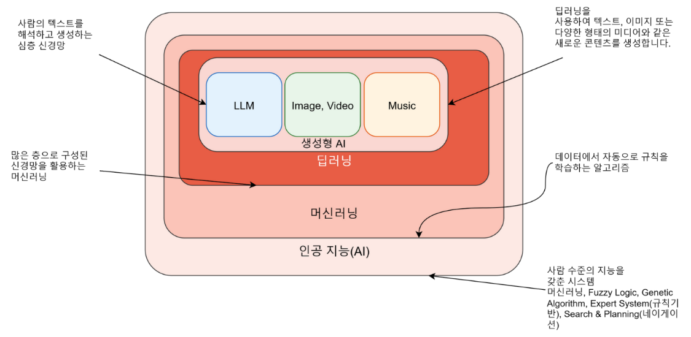
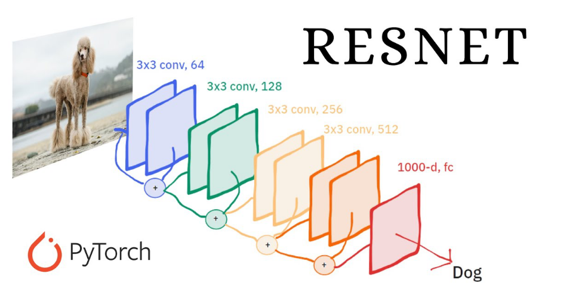
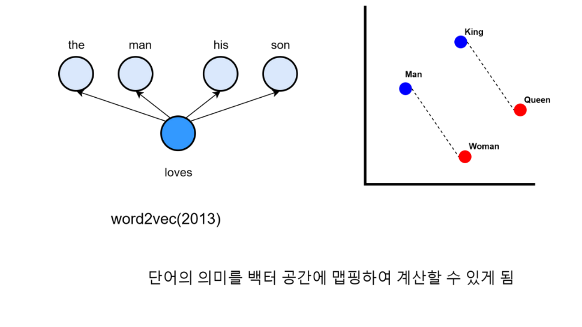
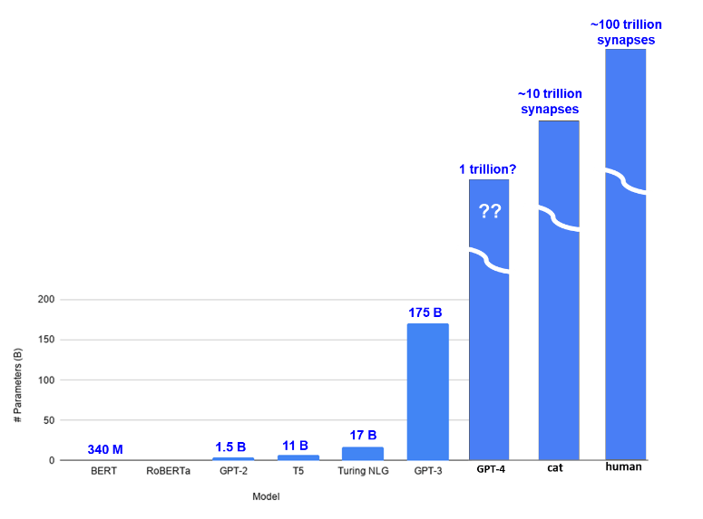
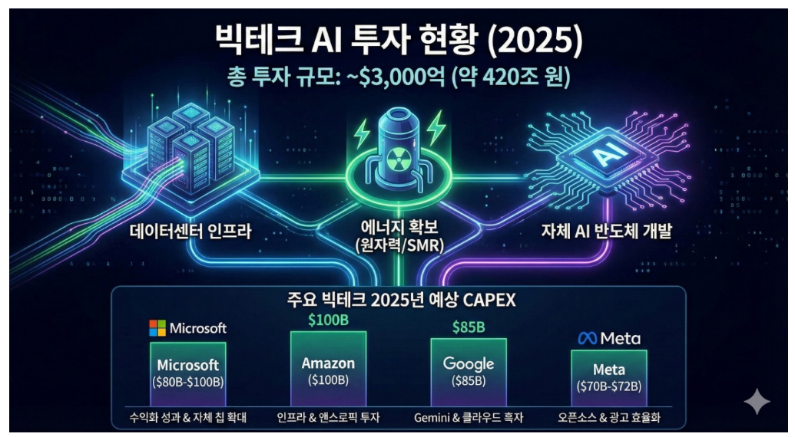
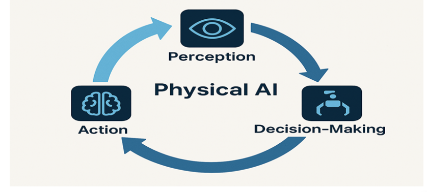
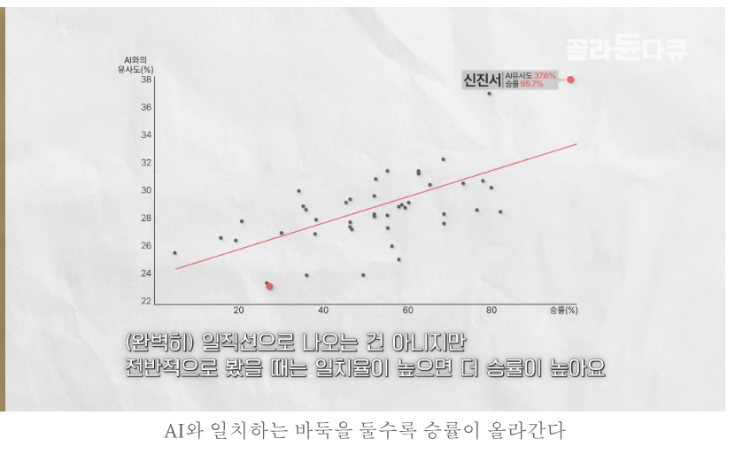
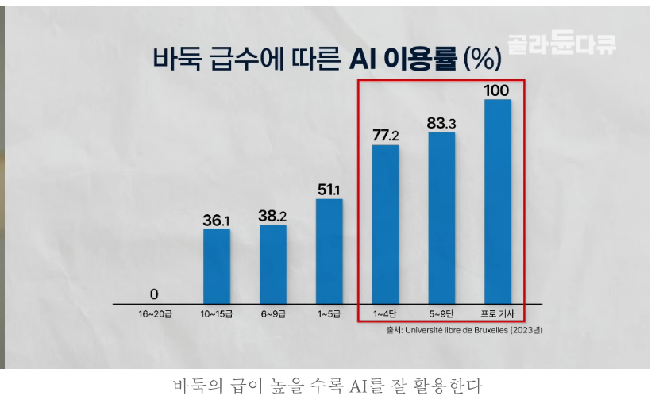

01. AI의 발전과 사회적 맥락
AI의 발전은 모델 이름의 교체만으로 설명되지 않는다. 데이터에서 표현을 학습하는 방법, 깊은 모델을 학습시키는 구조, 계산 자원, 학습 목표가 함께 바뀌었다. 이 장에서는 그 변화를 설명하고, AI에 관한 사회적 주장을 수치와 근거의 수준에 맞게 읽는다. 모델의 능력을 이해하는 것과 그 결과를 믿어도 되는지 판단하는 것을 함께 배운다.
1. 이 장에서 할 수 있어야 하는 일
미분이나 프로그래밍 경험은 필요하지 않다. 덧셈, 비율, 그래프의 가로·세로축을 읽을 수 있으면 시작할 수 있다. 벡터는 수를 순서대로 묶은 것, 파라미터는 학습 중 조정되는 모델의 수치라는 뜻으로 사용한다. 뒤 장에서 정확한 연산을 배운다.
읽은 뒤에는 ① 학습 방법과 생성 작업을 구별하고, ② 각 모델이 해결한 문제를 한 문장으로 설명하고, ③ 잔차·비율 예제를 계산하고, ④ 실험 결과·관찰·전망·가치 판단을 구별할 수 있어야 한다. 처음 읽으면 2~4절의 모델 원리를 읽고 5~8절에서 적용한다. 복습할 때는 9절 문제를 먼저 풀고 막힌 절로 돌아간다.
원문의 표지는 ‘LLM 모델의 이해와 확장’이다. 목차는 1일차의 역사·수학·언어 모델·입력·Attention·GPT 구조와 2일차의 layer·입출력·지식·학습·미세튜닝·추론·효율화를 구분한다. 이 교재의 22장 구성은 같은 내용을 학습 질문별로 더 나눈 것이다. 문장 → 수치 표현 → 문맥 처리 → 출력 확률을 먼저 이해하면, 뒤에서 정답과의 오차 → 파라미터 갱신을 설명할 수 있다. 표지 기록, 원문 목차 기록.
이 장의 ‘원문’ 표시는 슬라이드의 주장, ‘보충’은 독립 학습을 위한 설명·가상 예제, ‘정정’은 계산 또는 확인한 자료에 따른 수정이다. 미확인이라고 표시한 사례도 비판적으로 읽는 연습에는 사용할 수 있으나 확정 사실이나 최신 현황으로 인용하면 안 된다. 원 영상과 강사의 구두 설명은 복원하지 않았다.
2. AI라는 범위와 발전의 지도
AI는 지적인 작업을 기계로 수행하려는 넓은 연구·기술 범위다. 머신러닝은 사람이 모든 규칙을 직접 적는 대신 데이터에서 예측 규칙을 학습한다. 딥러닝은 여러 층의 신경망으로 중간 표현과 예측 규칙을 함께 학습하는 방법이다. 생성형 AI는 텍스트·영상·음악처럼 새 데이터를 만들어내는 작업의 성격이다. LLM은 대규모 언어 모델을 뜻한다.
그림에서는 상자 안에 들어 있다는 관계와 화살표가 가리키는 주석을 구별하자.

밖에서 안으로 갈수록 설명 범위가 좁아진다. 이 그림은 현대 딥러닝 기반 생성형 시스템의 개요다. 모든 생성 모델을 빠짐없이 분류한 엄밀한 계통도는 아니다. ‘머신러닝 → 딥러닝 → 생성형’이라는 부제도 앞 기술이 사라지고 뒤 기술로 완전히 교체되었다는 뜻으로 읽지 않는다. 불량 여부를 분류하는 신경망은 딥러닝이지만 새 문장을 만들지 않을 수 있다. 반대로 생성이라는 목표만으로 Transformer 구조라고 판단할 수도 없다. 페이지 해설.
원문 연대표는 비전의 발전, Transformer와 언어 처리, 생성형 대중화의 세 시기를 보여준다. Vision은 영상 처리, NLP는 자연어 처리, Multimodal은 여러 자료 형식의 결합, Reasoning은 여러 단계의 문제 해결을 강조하는 말이다. 이 단어들은 같은 분류축이 아니다. 영상 모델도 추론 작업에 쓰일 수 있고 언어 모델도 영상 입력과 결합될 수 있다.
보충: 원문 5쪽의 ChatGPT 2022 표기는 공식 공개일 2022-11-30과 일치한다. 2020 Diffusion 표기는 대표적인 DDPM 논문의 이정표로 읽을 수 있으나 확산 생성 연구 자체는 2015년에도 있었다. 연대표는 최초 제안·대회 성과·대중화 시점을 혼합할 수 있으므로 확인할 사건을 먼저 정해야 한다. 공식 공개 기록, 2015 확산 연구, DDPM. 전체 연대표의 항목은 5쪽 해설에 남겼다.
3. 모델 이름을 문제와 설계로 바꾸어 읽기
3.1 AlexNet과 ResNet: 계산 가능한 것과 학습 가능한 것
이미지를 분류하려면 픽셀에서 유용한 특징을 추출해야 한다. 합성곱은 작은 필터를 영상의 여러 위치에 적용하는 연산이다. 이 연산을 여러 층 쌓으면 앞 층의 특징을 조합해 뒤 층의 특징을 만들 수 있다. AlexNet의 중요한 맥락은 큰 영상 데이터, 합성곱 신경망, GPU 계산을 결합한 분류 성과다. ‘딥러닝의 시작’이라는 원문 표현은 역사적 전환점의 강조로 읽는다. 신경망 자체를 처음 발명했다는 뜻은 아니다.
AlexNet 논문의 2012 대회 top-5 오류율 15.3%는 정답이 상위 다섯 후보에 없는 비율이다. top-1은 첫 후보만 정답이어야 하므로 서로 바꿔 쓸 수 없다. 보충 예제: 100개 중 15개가 top-5 오류이면 성공은 85개다. 이것은 개념을 설명하는 정수 예제이며 실제 실험 재현은 아니다. 원문 막대그래프는 2010~2015의 상승을 보여주지만 지표 명칭·출처가 빠져 정확한 성능 데이터로 재사용하지 않았다. AlexNet 논문, 6쪽 그래프 해설.
층을 더 쌓는다고 학습이 자동으로 쉬워지는 것은 아니다. ResNet은 입력을 그대로 전달하는 길과 변환한 길을 합친다. 무엇이 우회하고 어디서 더해지는지 보자.

y=x+F(x)에서 x는 입력, F(x)는 층이 계산한 변화량, y는 출력이다. 기존 교재의 예제를 그대로 검산하면 2+0.3=2.3, 변화량이 0이면 2+0=2다. F(x)=-0.4로 바꾸면 y=1.6이다. 입력과 변화량의 벡터 모양이 같아야 더할 수 있다. 채널 수가 달라지는 경우에는 모양을 맞추는 변환이 필요하며 원문 그림은 이를 단순화했다. 잔차 연결은 학습을 돕는 설계이지 깊이가 무한히 커져도 성능이 계속 오른다는 보장이 아니다. ResNet 논문, 그림의 채널·필터 표기.
3.2 Word2Vec: 번호를 관계가 있는 표현으로 바꾸기
단어 번호가 5와 6이라고 해서 두 단어 의미가 가깝지는 않다. 임베딩은 단어를 여러 실수의 벡터에 대응시킨다. Word2Vec의 Skip-gram은 중심 단어로 주변 단어를 예측하도록 학습한다. 주변 문맥이 비슷한 단어의 표현에서 의미·문법적 관계가 나타날 수 있다.
왼쪽 화살표 방향과 오른쪽 점선 방향은 서로 다른 역할을 한다.

왼쪽은 학습 과제의 입력→출력이고, 오른쪽은 학습 후 표현에서 관찰할 수 있는 관계다. 왕-남자+여자≈여왕은 근사적인 유사성 예시다. 원문에는 실제 좌표가 없다. 교육용 가상 벡터 왕=(2,1), 남자=(1,0), 여자=(0,1)을 쓰면 결과는 (2-1+0,1-0+1)=(1,2)다. 여왕의 벡터가 그 위치 근처에 있는지는 별도 학습 결과로 확인해야 한다. 연산이 된다는 것과 모든 언어 의미를 논리적으로 이해한다는 것은 다르다. Word2Vec 논문, 8쪽 해설.
3.3 AlphaGo 계열: 예측을 탐색과 연결하기
바둑은 한 수 뒤에 많은 선택지가 펼쳐진다. 정책은 다음 수의 선택을 돕고, 가치는 현재 상태의 승리 가능성을 평가한다. 탐색은 후보 수의 후속 상태를 살펴 현재 선택을 개선한다. 자기대국은 시스템이 자신과 대국한 결과를 학습 자료로 사용한다. AlphaGo Zero의 공식 설명은 신경망과 탐색의 반복적 결합, 인간 기보 없이 자기대국으로 학습하는 점을 강조한다. 3일 학습 결과와 40일 결과가 다르며, TPU 4대 표기를 모든 학습 계산의 총량으로 곧바로 읽으면 안 된다. 공식 설명.
AlphaZero의 일반성은 같은 접근을 바둑·체스·쇼기에 적용했다는 범위에서 이해한다. 한국 장기가 아니라 일본의 쇼기다. 각 게임의 규칙·행동 정의·학습 계산은 여전히 필요하다. 게임별로 훈련하는 방법의 일반성과 모든 일을 이미 아는 단일 지능을 구분한다. 원문의 78수 사례를 MCTS 알고리즘 자체의 논리적 오류라고 단정할 근거는 확보하지 못했다. AlphaZero 논문, 승무패 범례와 계산.
3.4 Transformer와 GPT: 정보 전달과 학습 목표
순차 자료에서 멀리 떨어진 단어의 정보를 사용하는 일이 중요하다. Attention은 각 위치의 표현을 갱신할 때 다른 위치의 정보를 얼마나 참조할지 계산한다. 예컨대 ‘철수가 책을 읽는다’에서 읽는 주체를 이해하려면 철수 정보를 연결하는 것이 도움이 된다. 이는 교육용 관계 예시이며 특정 head가 언제나 주어만 맡는다는 설명은 아니다.
Transformer는 Attention을 중심으로 문맥을 처리하는 구조다. 원 논문은 번역을 위한 encoder-decoder 모델이며, GPT의 decoder 중심 구성과 전체 구조가 같지는 않다. 학습 때 여러 입력 위치를 병렬 계산할 수 있다는 장점과, 다음 토큰을 생성할 때 앞선 토큰에 의존한다는 조건을 함께 기억한다. 원문 저자 사진이나 창업 성과는 이 원리의 증거가 아니다. Transformer 논문, 10쪽 해설.
GPT의 중심 학습 과제는 문맥 뒤의 다음 토큰을 예측하는 것이다. 토큰은 모델이 처리하는 글자·단어 조각 등의 단위다. 보충 예제: ‘오늘 날씨가’ 뒤 후보 ‘좋다’ 0.6, ‘춥다’ 0.3, ‘기타’ 0.1을 주면 합은 1이다. 정답이 ‘춥다’라면 그 정답을 더 잘 예측하도록 학습하고, 추론 때는 이미 학습한 확률을 사용해 토큰을 선택한다. 실제 어휘는 훨씬 크며 높은 확률은 문장의 사실성을 보장하지 않는다.
규모 그림에서 물결 표시와 단위를 먼저 확인하자.

B는 10억, M은 100만이다. 원문 GPT-3 175B와 GPT-2 1.5B는 수의 비율로 약 116.67배다. 이 결과를 지능이나 정확도의 배수라 부를 수 없다. 특히 GPT-4의 1 trillion?과 ??는 추정임을 표시한다. 공식 보고서는 모델 크기를 공개하지 않았다. 오른쪽 고양이·사람 막대는 시냅스 수이므로 모델 파라미터와 직접 비교하는 동일 척도가 아니다. 흰 물결로 축이 잘려 있어 그림 높이의 비율도 사용할 수 없다. GPT-4 보고서 2절, 12쪽 연도 목록과 표기.
3.5 GAN·Diffusion·AlphaFold: 생성과 예측의 목적
GAN은 생성기와 판별기를 함께 학습한다. 생성기는 실제와 비슷한 표본을 만들고 판별기는 실제와 생성 표본을 구별한다. CycleGAN은 짝이 정해지지 않은 두 영상 집합 사이의 변환을 학습하며, 변환했다가 되돌렸을 때 원본과 비슷하도록 하는 제약을 사용한다. 얼룩말을 말처럼 바꾸는 일은 영상→영상 변환이며 그것만으로 모든 자료 형식을 처리하는 멀티모달 모델인 것은 아니다. Diffusion은 데이터를 잡음으로 만드는 과정과 반대 방향의 복원 과정을 학습해 새 표본을 만든다. CycleGAN 논문, DDPM 논문, 11쪽 그림과 영상의 확인 범위.
AlphaFold는 아미노산 서열에서 단백질 3차원 구조를 예측하는 문제를 보여준다. 서열은 입력, 구조와 신뢰도는 결과이며 실제 기능 검증과 동일하지 않다. 정정: 원문 ‘X선 결정학의 종말’은 지나친 일반화다. 예측의 낮은 신뢰도 영역이나 원자 수준의 세밀한 질문에는 실험적 확인이 필요하다. 구조 예측과 새 단백질 설계도 다른 과제다. 2024 노벨 화학상은 절반이 David Baker의 계산 단백질 설계, 나머지가 Demis Hassabis·John Jumper의 구조 예측에 수여되었다. EMBL-EBI 설명, 노벨상 공식 기록, 13쪽 수치와 화살표의 한계.
4. 전망과 투자 그림을 읽는 방법
14쪽부터 질문은 모델의 원리에서 미래의 사회적 결과로 바뀐다. “모델이 이 평가에서 성공했다”는 관측, “산업을 바꿀 것이다”는 예측, “그 변화가 바람직하다”는 가치 판단이다. 한 문장에 셋이 섞이면 먼저 분리한다. 구분 페이지.
기업가치는 특정 시점의 평가액이고, 투자액은 기간 동안의 지출이며, 매출은 판매 수입이다. IPO는 공개시장에 주식을 상장하는 사건이다. 미래 IPO 이미지가 실제 상장이나 제시 가치의 실현을 입증하지 않는다. 15쪽의 0.9T→2.0T는 정확히 2배가 아니라 약 2.22배, 증가율 약 122.22%다. 제목과 가로축의 IPO 월 표기도 다르므로 기대와 사실을 구별한다. 15쪽 조사 기록.
다음 그림은 “합계와 세부값이 일치하는가?”라는 질문으로 읽는다.

CAPEX는 장기간 사용하는 자산에 대한 자본지출이다. 원문 하한 합계는 80+100+85+70=335B, 상한 합계는 100+100+85+72=357B다. B는 10억 달러이므로 3,350억~3,570억 달러이며 표시 총액 3,000억과 다르다. 이 차이를 발견했다고 어느 회사 공시가 맞는지까지 확인한 것은 아니다. 회사 전체 지출인지 AI 전용인지, 회계기간이 같은지, 계획인지 실적인지를 다음에 확인해야 한다. 420조 원 환산은 300B 기준 달러당 1,400원을 가정한 값이며 현재 환율이 아니다. 16쪽 검산.
5. World Model과 몸을 가진 AI
월드 모델은 현재 상태와 행동에 따른 다음 관측·상태를 예측하는 내부 모델이다. 환경에서 직접 모든 행동을 해 보기 전에 결과를 예상하거나 정책 학습에 활용할 수 있다. 물리 AI는 실제 환경을 감지하고 결정하고 행동한다. VLA는 Vision-Language-Action으로 시각·언어 입력을 행동과 연결하는 구성을 말한다. 원문의 Cosmos는 이런 분야의 예시다. World Models, Cosmos 보고서.
왜 행동에서 지각으로 화살표가 돌아오는지 보자.

컵을 옮기는 예에서 카메라는 컵 위치를 관측하고, 시스템은 잡을 위치와 이동을 결정하고, 팔은 행동한다. 다음 관측에서는 컵과 팔 위치가 바뀌므로 다시 판단한다. 세계 모델은 밀었을 때 컵이 어떻게 움직일지 예상할 수 있지만, 그 예측이 실제 팔의 힘 조절이나 안전한 동작을 자동으로 해결하지는 않는다. 새로운 표면·조명·물체에서는 학습 조건과의 차이로 실패할 수 있다. 예측 영상이 자연스럽다는 것과 물리적 정확성이 높다는 것도 별개다. 17쪽 해설.
휴머노이드는 사람과 유사한 몸 형태이며 embodied AI는 몸을 통한 환경 상호작용을 강조한다. 원문 뇌→로봇 그림은 개념적 비유다. 사람 모양이나 한 번 성공한 데모만으로 노동을 대체한다고 판정할 수 없다. 같은 작업을 물체·조명·배치가 달라져도 반복할 수 있는지, 실패를 감지하고 멈추거나 복구할 수 있는지, 시간·비용이 어떤지 평가해야 한다. 18쪽과 작은 평가 설계.
6. 배움·시험·수학 증명에서 평가의 단위를 정하기
19쪽은 인간과 침팬지의 집단·도구·지식 전파를 비교하고 가소성을 소개한다. 가소성은 경험에 따른 신경계 변화의 개념이다. 원문의 50/150, 지식 전파 X/O는 비교를 단순화한 표이며 이 교재는 보편적인 생물학 사실로 채택하지 않는다. 학습의 질문은 답을 기억하는 데서 그치지 않고 다른 조건에서도 설명·적용할 수 있느냐는 것이다. 잔차 입력은 그대로 두고 변화량만 바꾸어 계산하는 활동이 그 예다. 19쪽의 비교표와 미확인.
20쪽에는 440/450이라는 총점, o1 계열의 표, 여러 모델의 국어·수학 그래프가 함께 있다. 총점 비율은 440/450×100≈97.78%이나 이 산술만으로 시험을 재현한 것이 아니다. 왼쪽 표와 오른쪽 그래프의 모델 목록·과목·조건이 달라 같은 실험으로 합칠 수 없다. 공통 영역과 선택 영역 평균을 누적한 점수라면 각 영역의 배점과 평균 방법도 필요하다. 모델 버전, 문제 집합, 프롬프트, 도구 사용, 반복 횟수, 채점 방식을 정해야 비교가 가능하다. 20쪽 원문 값과 해석.
수학에서는 답안 생성과 증명 검증을 더 엄밀히 구별한다. 원고는 논증을 적은 문서, 결과 묶음은 관련 원고들의 집합, 해결 문제 수는 서로 다른 질문의 개수다. Lean 같은 증명 도구는 형식화된 명제와 가정 아래에서 증명 절차를 검사한다. 자연어로 의도한 명제와 형식 명제가 맞는지도 확인해야 한다.
원문 21쪽은 상위 500개 중 완전 90개와 부분 45개를 합쳐 27%라고 쓴다. (90+45)/500=0.27은 맞지만 완전 해결 비율은 90/500=0.18, 즉 18%다. 원고 722편·묶음 372개는 교안의 수치다. 2026-11-09 확인한 공식 README는 721편·373묶음을 제시하고 일부 미형식화 결과에는 문제가 있을 수 있다고 밝힌다. 변경 가능한 집계는 날짜와 버전을 붙이고, 전체를 독립 검증했다고 표현하지 않는다. 공식 README, 21쪽 대조.
22쪽의 Barnette 추측에 관한 댓글은 24년간 연구한 사람이 느끼는 감정과 “Lean 증명 없이 원고를 읽는 중”이라는 상태를 담는다. 이 기록은 연구의 즐거움·동기·정체성에 관한 토론 근거다. 증명 타당성을 확정하는 근거는 아니다. 익명 댓글의 작성자를 추측하지 않았고 해당 수학 명제를 독립 검증하지 않았다. 22쪽 해설.
7. 노동·산업·사용 권한·의식에 관한 주장
23쪽은 감원과 기본소득을, 24쪽은 업무 에이전트·영상 생성과 산업 반응을 다룬다. 직무는 여러 작업의 묶음이다. 보고서 작성이 60→30분으로 줄고 원래 직무 전체가 120분이면, 나머지가 일정할 때 총시간은 90분으로 25% 감소한다. 한 작업의 50% 절감과 직무 전체의 절감은 다르다. 감원 집계에서 AI의 인과 효과를 추정하려면 수요·기업 재편 등 다른 설명과 비교해야 한다. 기본소득은 제도적 선택이며 기술 발전의 자동 결과가 아니다. 23쪽.
SaaS는 네트워크로 제공하는 소프트웨어 서비스다. 업무 에이전트는 목표에 따라 도구를 여러 단계 호출해 결과를 만들고, 영상 생성기는 입력 조건에 맞는 영상을 만든다. 두 유형의 기능과 성공 기준을 구분해야 한다. 원문 제품명·주가 하락·400조 같은 썸네일은 확인된 현재 현황으로 재서술하지 않았다. 실제 업무 결과의 정확성·시간·비용을 관찰해야 효과를 판단할 수 있다. 24쪽.
25쪽은 군사적 사용과 기업의 허용 범위에 관한 주장이다. 여기서는 작동 절차를 다루기보다 정보 처리와 행동 권한을 구분한다. 모델의 분류, 사람의 검토, 행동 승인, 결과 책임은 서로 다른 단계다. 사진이나 ‘100% 활용’ 문구만으로 계약·정책·자율성 수준을 확정하지 않는다. 25쪽 확인 범위.
26~27쪽은 의식과 자유의지, 새로운 지적 존재를 질문한다. 과제 수행 능력, 주관적 경험, 생물학적 종의 개념은 서로 다르다. “의식이 있다”고 답하는 문장을 생성하는 것만으로 실제 경험을 판정할 수 없다. 준비전위 같은 뇌 신호의 시간적 선후도 모든 선택에 대한 결론을 자동으로 주지는 않는다. 원문의 -550ms와 -200ms 차이는 350ms다. 이는 관측 시점의 차이이며 자유의지의 존재·부재 자체가 아니다.
Maoz 등의 연구는 임의 선택과 숙고한 기부 선택에서 준비전위 양상이 달랐음을 보고한다. 과제의 조건이 결과 해석에 중요하다는 예이며 AI 의식의 증거가 아니다. 원문의 Claustrum 스위치·통합 정보 이론 요약·인류 이동 지도·외계인 기사도 확정적인 의식 판정이나 미래 예측으로 사용하지 않는다. Maoz 등 원 논문, 26쪽, 27쪽.
8. 전문가와 AI: 상관·이용률·활용 능력
28쪽 산점도를 읽을 때 어떤 축이 승률인지 먼저 확인하자.

가로축은 대국 승률, 세로축은 AI와의 수 유사도다. 높은 실력 때문에 두 값이 함께 높을 수 있으므로 상관을 인과로 바꾸지 않는다. 세로축이 약 22~38로 제한되어 있고 점들이 직선 위에 모두 놓이지 않는다는 점도 중요하다. 점의 표본·기간·유사도 계산법은 미확인이다. 28쪽 해설.
29쪽 막대는 이용의 결과가 아니라 사용 비율을 묻는다.

원문 표기대로 1~5급은 51.1%, 1~4단은 77.2%다. 차이는 26.1%p이고 상대 증가율은 약 51.08%다. “이용률이 높다”를 “더 정확하게 활용한다”로 치환할 수 없다. 표본 수·조사 문항이 없어 인구 전체의 비율로도 일반화하지 않는다. 29쪽 수치·범위.
도구를 배움에 연결하려면 질문을 정하고, 결과를 스스로 설명하고, 작은 사례로 검산하고, 조건을 바꾸어 적용해 본다. 내부 활동: AI의 답이 “총투자 300B, 세부값 80+100+85+70B”라고 가정하자. 합하면 335B이므로 35B 차이를 설명한 뒤 회계기간·지출 정의·원자료를 재질문한다. 이처럼 기본 지식은 출력 검증의 도구가 된다. 30쪽 영상의 ‘스승·경쟁자·친구’라는 질문을 실제로 수행할 활동으로 바꾼 것이다. 영상 41초를 재생하거나 발언을 복원한 것은 아니다. 30쪽 복습.
9. 확인 질문과 해설
답을 가린 채 먼저 풀어 보자. 틀리면 표시한 절로 돌아가 조건과 정의를 다시 확인한다.
| 질문 | 해설 | 돌아갈 곳 |
|---|---|---|
| 생성형 AI이므로 반드시 Transformer인가? | 아니다. 생성은 작업 성격이며 GAN·Diffusion 등 다른 방법도 있다. | 2절, 3.5절 |
| x=2, F(x)=-0.4인 잔차 출력은? | 1.6이다. F(x)=0이면 원래 입력 2를 보존한다. 벡터는 모양이 같아야 더한다. | 3.1절 |
| 단어 번호 5와 6이 의미상 가깝다는 뜻인가? | 아니다. 번호는 식별자이며 관계는 학습된 벡터 표현에서 평가한다. | 3.2절 |
| AlphaZero가 여러 게임을 학습했다면 규칙도 필요 없는가? | 아니다. 게임 규칙·행동 정의·학습 조건을 제공한 범위의 일반성이다. | 3.3절 |
| 175B/1.5B를 지능 배수로 부를 수 있는가? | 약 116.67은 파라미터 수 비율이다. 지능 측정이 아니다. | 3.4절 |
| 335B~357B와 300B가 불일치하면 바로 거짓 공시인가? | 아니다. 원문 내부 산술 문제는 확인되지만 집계 정의·기간·공시를 추가 확인해야 한다. | 4절 |
| 세계 모델이 그럴듯한 미래 영상을 만들면 로봇이 안전한가? | 예측과 실제 행동·제어·복구는 별개다. 새로운 환경에서도 평가해야 한다. | 5절 |
| (90+45)/500=27%는 완전 해결률인가? | 부분 해결을 포함한다. 완전 해결만 세면 18%다. | 6절 |
| AI 사용률이 높으면 AI 때문에 실력이 늘었다는 뜻인가? | 사용과 능력의 척도가 다르고 상관은 인과가 아니다. | 8절 |
10. 원문 페이지별 상세 경로
아래 자료에는 원문 고유 문구·도표·전환과 개별 활동을 기록했다. 학습 설명은 이 장 안에 있고, 상세 경로 역시 PDF를 열지 않고 읽을 수 있다.
| 범위 | 상세 페이지 |
|---|---|
| 표지·목차·구분 | 1, 2, 3 |
| 분류·역사 | 4, 5 |
| 영상·단어·게임 | 6, 7, 8, 9 |
| Transformer·생성·과학 | 10, 11, 12, 13 |
| 전망·투자 | 14, 15, 16 |
| 물리 AI·학습 | 17, 18, 19, 20 |
| 수학·연구자 | 21, 22 |
| 사회·의식 | 23, 24, 25, 26, 27 |
| 전문가·AI 활용 | 28, 29, 30 |
다음 연결: 단어의 식별 번호와 벡터 표현을 구별했다. 다음 장에서는 벡터·행렬 연산과 확률 변환을 실제 작은 수로 계산한다.